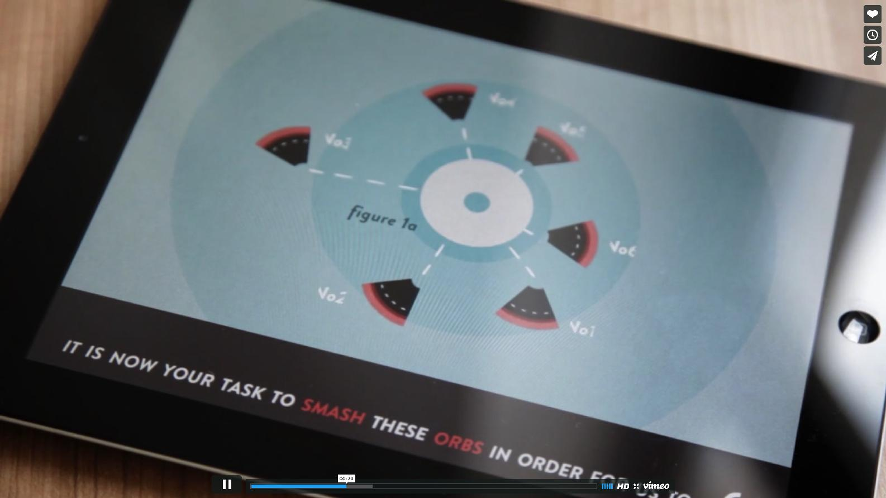
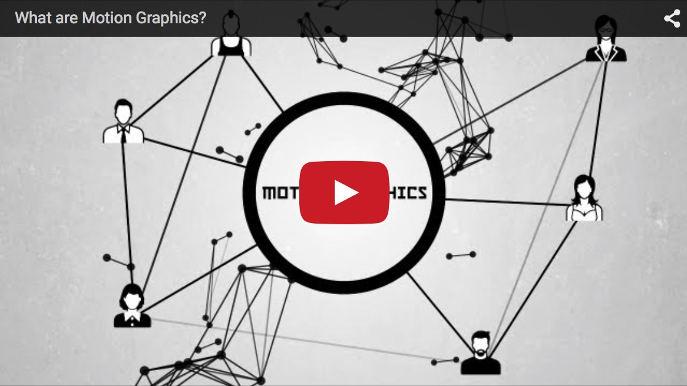
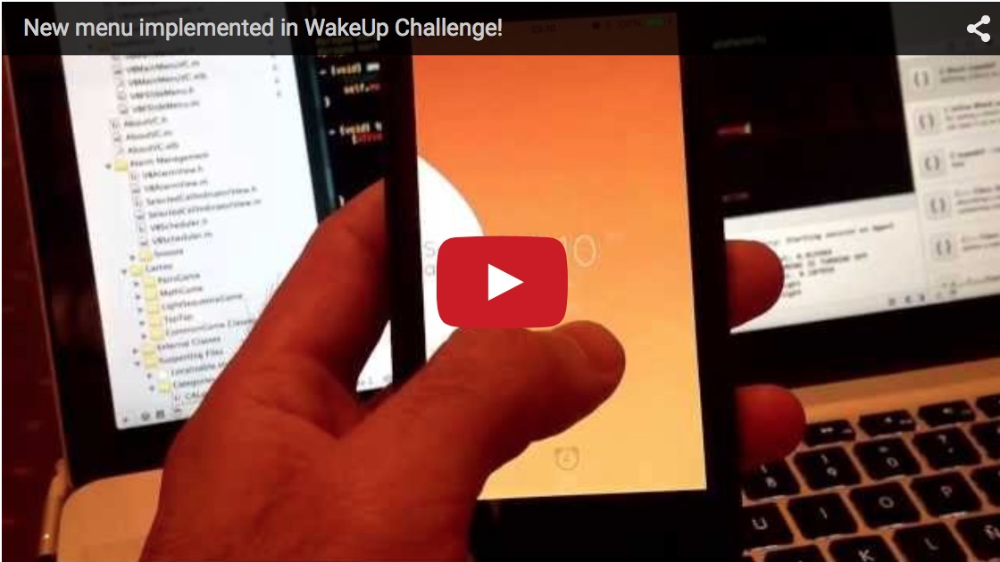

这两天和 Ray 一起吃拉面的时候，除了关注那位可爱服务员之外，他还煞有介事的跟我讲 —— “我发现了一个超屌的设计师，balabala”，其实时至今日我已经不知道如何定义超屌的设计师这个概念了，就像超屌的开发者一样，这个问题探究到最后只会变成一句感叹——人类最屌竟然只能做成这个样子。
不过，还是捧捧 Ray 的场啦，我问道 “是何许人也？”。
他拿过来几乎没有信号的 iPad 给我看，你看这个人，这个人，目光从 Safari 地址栏的 .cn 这个坑爹的后缀扫过后，赫然发现一个完全不知道的名字 Marcus Eckert。 虽然不知道名字，但是接下来的内容绝对是如雷贯耳——Wide Sky。
这段留着你来点开上面的两个链接欣赏下

个人英雄主义如果不是个人能力超强的话，往往会变成一个自我重伤的事情，但是很显然 Marcus Eckert 把这一点发挥到了极致， Meek for iOS 太震撼了。 所以按捺不住心中的激动，我对 Motion Graphics 展开了一番问道。
Motion Graphics 这个词我不久前第一次听说，当时是一米天给 CatchChat 做介绍动画的时候，跟我说他们是高大上的 MG，不过我的理解是怎么现在搞啥都得发明个名词来方便忽悠了，不过只要是好东西做做忽悠也没啥，但是此事也就这样没放在心上。
这次我借机好好研究了一下。
这里正好有一段关于 MG 是啥的 Youtube 视频，应该是某个专业做 MG 的团队出品的，质量一般般，不过我觉得是体现了绝大部分从业者对这个的理解。

所以我想了想，之前我应该也做过一个类似的东西，之前研究 Facebook POP 的时候，有个 Transform 的部分正是异曲同工。
但是说实在的，探究 Motion Graphics 的过程是不愉快的，因为看得越多，越发现了大家在用那么几种相似的变换形式来来回折腾。这种体验相似于其它的行业，最顶尖的天才研究出来一些新式的效果，其他人抄袭个改进。但是想想如果人类最顶尖的想象力和效果就是这样了，还是很伤心的。
Motion Graphics 在 AE 里做应该是相对简单的，不过 Marcus Eckert 用代码实现了这些效果，就让我很感动了，他自己也说，其实对他而言更多的是技术上的实验，所以我也思考了下如何从技术上实现这些效果。
Actually，动效无论是软件还是在动画里，用多了其实都会让人吐的。
好好，先聊聊 iOS 里怎么实现动效。
简单的飞来飞去，大小改变什么的就很简单了，聊聊复杂的形变问题。
还好我之前玩过 Blender，我的思路第一个就是对 Bezier 曲线进行改变，这个就比较类似关键帧动画。
比如我们如何把多边形变成五角星，这里我使用了 (PaintCode)[http://www.paintcodeapp.com] 这款软件来生成曲线
先画五边形
//// Polygon Drawing
let polygonPath = UIBezierPath()
polygonPath.moveToPoint(CGPointMake(162, 93))
polygonPath.addLineToPoint(CGPointMake(230.48, 142.75))
polygonPath.addLineToPoint(CGPointMake(204.32, 223.25))
polygonPath.addLineToPoint(CGPointMake(119.68, 223.25))
polygonPath.addLineToPoint(CGPointMake(93.52, 142.75))
polygonPath.closePath()
然后再画一个五角星的曲线
//// Star Drawing
let starPath = UIBezierPath()
starPath.moveToPoint(CGPointMake(162, 82))
starPath.addLineToPoint(CGPointMake(191.27, 124.71))
starPath.addLineToPoint(CGPointMake(240.94, 139.35))
starPath.addLineToPoint(CGPointMake(209.36, 180.39))
starPath.addLineToPoint(CGPointMake(210.79, 232.15))
starPath.addLineToPoint(CGPointMake(162, 214.8))
starPath.addLineToPoint(CGPointMake(113.21, 232.15))
starPath.addLineToPoint(CGPointMake(114.64, 180.39))
starPath.addLineToPoint(CGPointMake(83.06, 139.35))
starPath.addLineToPoint(CGPointMake(132.73, 124.71))
starPath.closePath()
拥有了这两个曲线后，我们使用一个 CAShapeLayer 来绘制第一个曲线
// 绘制 CAShapeLayer
let shape = CAShapeLayer()
shape.drawsAsynchronously = true
shape.frame = view.bounds
shape.path = polygonPath.CGPath
shape.lineWidth = 3.0
shape.lineCap = kCALineCapRound
shape.lineJoin = kCALineJoinRound
shape.strokeColor = UIColor.whiteColor().CGColor
shape.fillColor = color.CGColor
view.layer.addSublayer(shape)
接下来要做的就是加入个动画让 A path 变成 B path
let pathAnimation = CABasicAnimation(keyPath: "path")
pathAnimation.fromValue = polygonPath.CGPath
pathAnimation.toValue = starPath.CGPath
pathAnimation.duration = 1.0
pathAnimation.autoreverses = false
pathAnimation.timingFunction = CAMediaTimingFunction(name:
kCAMediaTimingFunctionEaseInEaseOut)
shape.addAnimation(pathAnimation, forKey: "animationKey")
shape.path = starPath.CGPath
Build Run 一下就可以发生这个渐变动画了，timingFunction 可以经过复杂的定义实现一个比较生动的动画。
通过 addQuadCurveToPoint 这个也可以实现控制点方式对形状进行控制，也可以写一个函数进行 Path 的 Smooth 的操作。这方面我们已经有 先行者 做了尝试
同时我也给 PNChart 0.6 版本加入了一个实时更新数据的功能，用的就是这个方法。
之后我又发现了一位先驱。

这效果看起来非常高大上，但是原理其实也很简单。添加一个 Pan 手势，通过 addQuadCurveToPoint 增加控制点，然后添加一个 Dummy 的 UIView 跟随控制点，在释放的时候给 Dummy 一个 Spring 的 Animation。
let pan = UIPanGestureRecognizer(target: self,
action: "updatePathPan:")
view.addGestureRecognizer(pan)
//// Polygon Drawing
let polygonPath = UIBezierPath()
polygonPath.moveToPoint(CGPointMake(0, 0))
polygonPath.addQuadCurveToPoint(
CGPointMake(0, view.frame.height),
controlPoint: CGPointMake(0, view.frame.height/2.0))
polygonPath.closePath()
// 绘制 CAShapeLayer
jellyShape.drawsAsynchronously = true
jellyShape.frame = view.bounds
jellyShape.path = polygonPath.CGPath
jellyShape.lineWidth = 3.0
jellyShape.lineCap = kCALineCapRound
jellyShape.lineJoin = kCALineJoinRound
jellyShape.strokeColor = UIColor.whiteColor().CGColor
jellyShape.fillColor = color.CGColor
view.layer.addSublayer(jellyShape)
在滑动的时候同步改变 Path
func updatePathPan(gesture: UIPanGestureRecognizer) {
if gesture.state == UIGestureRecognizerState.Ended {
let displayLink = CADisplayLink(target: self,
selector: "syncPath")
displayLink.addToRunLoop(NSRunLoop.currentRunLoop(),
forMode: NSDefaultRunLoopMode)
dummyView = UIView(frame:
CGRect(x: currentControlPoint,
y: view.frame.height/2.0, width: 10, height: 10))
view.addSubview(dummyView!)
UIView.animateWithDuration(1.0, delay: 0,
usingSpringWithDamping: 0.3,
initialSpringVelocity: 50,
options: UIViewAnimationOptions.CurveEaseInOut,
animations: { () -> Void in
self.dummyView!.center = CGPointMake(0,
self.view.frame.height/2.0)
}, completion: { finish in
self.currentControlPoint = 0
displayLink.invalidate()
})
} else if gesture.state == UIGestureRecognizerState.
Changed {
let translationPoint = gesture.translationInView(view)
currentControlPoint = currentControlPoint +
translationPoint.x
//// Polygon Drawing
let polygonPath = UIBezierPath()
polygonPath.moveToPoint(CGPointMake(0, 0))
polygonPath.addQuadCurveToPoint(CGPointMake(0,
view.frame.height),
controlPoint: CGPointMake(currentControlPoint,
view.frame.height/2.0))
polygonPath.closePath()
gesture.setTranslation(CGPointZero, inView: view)
jellyShape.path = polygonPath.CGPath
}
}
func syncPath() {
if let dummyView = dummyView,
currentLayer = dummyView.layer.presentationLayer()
as? CALayer {
//// Polygon Drawing
let polygonPath = UIBezierPath()
polygonPath.moveToPoint(CGPointMake(0, 0))
polygonPath.addQuadCurveToPoint(
CGPointMake(0, view.frame.height),
controlPoint:
CGPointMake(currentLayer.frame.origin.x,
view.frame.height/2.0))
polygonPath.closePath()
jellyShape.path = polygonPath.CGPath
}
}
值得注意的是，这里利用了 presentationLayer 来获取在动画过程中 Layer 的实际位置。
另外一种思路是使用 UIDynamic 增加一个重力坠落的效果，使用 CADisplayLink 同步 Path 和 Dummy View 的数值。
首先和之前一样，创建初始环境
func bezierUIDynamic() {
let pan = UIPanGestureRecognizer(target: self,
action: "updateUIDynamicPathPan:")
view.addGestureRecognizer(pan)
//// Polygon Drawing
let polygonPath = UIBezierPath()
polygonPath.moveToPoint(CGPointMake(0, 0))
polygonPath.addQuadCurveToPoint(CGPointMake(0,
view.frame.height),
controlPoint: CGPointMake(0, view.frame.height/2.0))
polygonPath.closePath()
// 绘制 CAShapeLayer
jellyShape.drawsAsynchronously = true
jellyShape.frame = view.bounds
jellyShape.path = polygonPath.CGPath
jellyShape.lineWidth = 3.0
jellyShape.lineCap = kCALineCapRound
jellyShape.lineJoin = kCALineJoinRound
jellyShape.strokeColor = UIColor.whiteColor().CGColor
jellyShape.fillColor = color.CGColor
view.layer.addSublayer(jellyShape)
}
处理 pan 手势略有不同
func updateUIDynamicPathPan(gesture: UIPanGestureRecognizer) {
if gesture.state == UIGestureRecognizerState.Ended {
bezierUIDynamicSetup()
} else if gesture.state == UIGestureRecognizerState.
Changed {
let translationPoint = gesture.translationInView(view)
currentControlPoint = currentControlPoint +
translationPoint.x
//// Polygon Drawing
let polygonPath = UIBezierPath()
polygonPath.moveToPoint(CGPointMake(0, 0))
polygonPath.addQuadCurveToPoint(
CGPointMake(0, view.frame.height),
controlPoint:
CGPointMake(currentControlPoint,
view.frame.height/2.0))
polygonPath.closePath()
gesture.setTranslation(CGPointZero, inView: view)
jellyShape.path = polygonPath.CGPath
} else if gesture.state == UIGestureRecognizerState.
Began {
displayLinkUIDynamic?.invalidate()
currentControlPoint = 0
}
}
在 bezierUIDynamicSetup() 里面，我们开始构建 UIDynamic 的环境
func bezierUIDynamicSetup() {
// 创建碰撞盒子
box = UIView(frame: CGRect(x: currentControlPoint,
y: view.frame.height/2.0, width: 10, height: 10))
// box?.backgroundColor = UIColor.redColor()
view.addSubview(box!)
// 创建 Animator
animator = UIDynamicAnimator(referenceView:self.view)
// 添加給盒子添加重力属性
gravity = UIGravityBehavior(items: [box!])
// 将重力调整为 x 轴向左坠落
gravity.gravityDirection = CGVectorMake(-10.9, 0)
// 給盒子增加碰撞检测
collision = UICollisionBehavior(items: [box!])
collision.translatesReferenceBoundsIntoBoundary = true
// 修改盒子的弹性
let itemBehaviour = UIDynamicItemBehavior(items: [box!])
itemBehaviour.elasticity = 0.6
animator?.addBehavior(itemBehaviour)
animator?.addBehavior(collision)
animator?.addBehavior(gravity)
displayLinkUIDynamic = CADisplayLink(target: self,
selector: "syncUIDynamicPath")
displayLinkUIDynamic!.addToRunLoop(
NSRunLoop.currentRunLoop(),
forMode: NSDefaultRunLoopMode)
}
那么随着进一步探索，又找到一位复制 Skype 的 果冻菜单 效果的先驱。
实现的原理也是一样的，不过是创建两个 Dummy View ，你可以研究下这篇文章。
后来作者创建了一个独立的库 AHKBendableView。
虽然实现的方式就更加复杂了，不过原理还是一样的。
let path = UIBezierPath()
path.moveToPoint(CGPoint(x: 0, y: 0))
path.addQuadCurveToPoint(CGPoint(x: width, y: 0),
controlPoint:CGPoint(x: width / 2.0,
y: 0 + bendableOffset.vertical))
path.addQuadCurveToPoint(CGPoint(x: width, y: height),
controlPoint:CGPoint(x: width + bendableOffset.horizontal,
y: height / 2.0))
path.addQuadCurveToPoint(CGPoint(x: 0, y: height),
controlPoint: CGPoint(x: width / 2.0,
y: height + bendableOffset.vertical))
path.addQuadCurveToPoint(CGPoint(x: 0, y: 0),
controlPoint: CGPoint(x: bendableOffset.horizontal,
y: height / 2.0))
path.closePath()
使用 CADisplayLink 同步 bendableOffset 和 Dummy View 的移动。
研究到这里，回想 Marcus Eckert 的工作，觉得越发碉堡，如果要在三维空间实现这些效果，那么还要再去搞 OpenGL，不禁为此觉得潸然泪下，无论是工程师还是设计师，局限于自己的领域是无法做出极具创造性的工作的。
望着窗外广州大道的车灯，被雨夜的风吹的更清醒一点了。
你可以从 Github 获取我们以上两个 Demo 的源码.